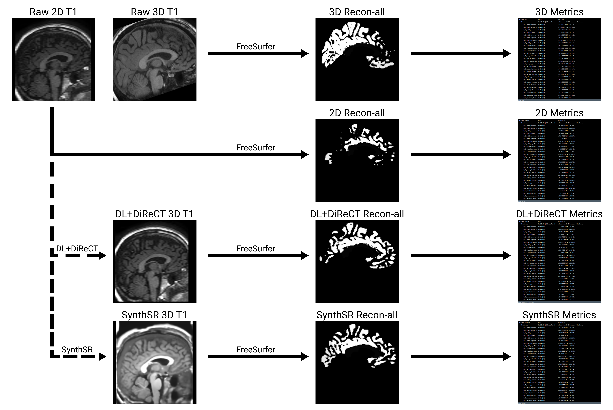
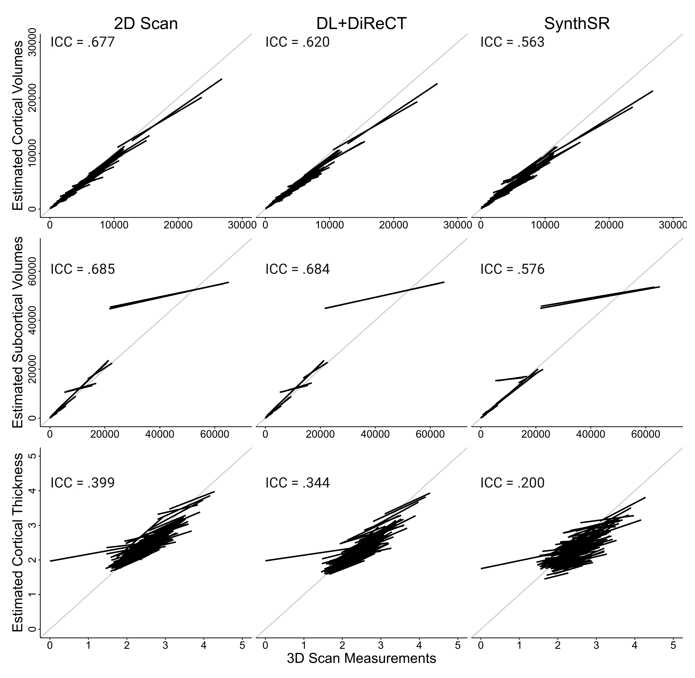
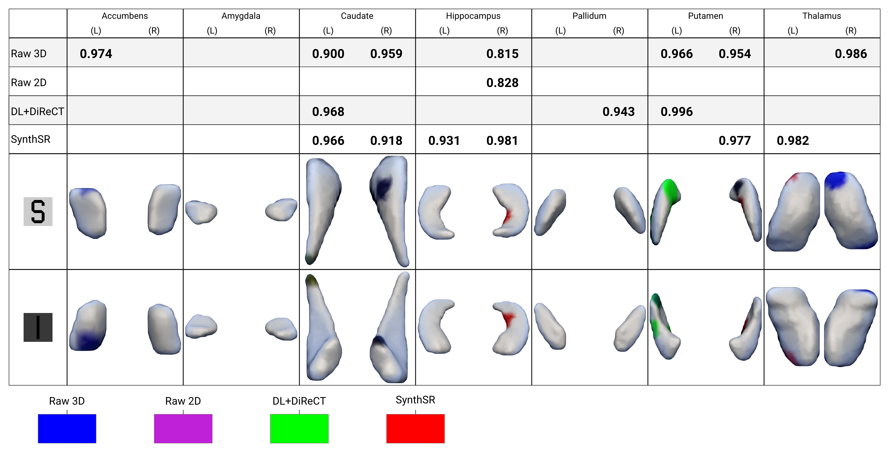

Reconstruction of 2D MRI using SynthSR and DL+DiReCT for Subcortical Shape Analysis in Epilepsy [POSTER]
Ratcliffe, de Bézenac, Das, ... and Keller, 2023
Background
The accuracy of volumetric and morphometric neuroimaging analyses is largely dependent on the quality of the scans, necessitating resource-demanding acquisitions for ‘research quality’ images. Isotropic (3D) T1 images are desirable for quantitative analyses, however a routine compromise in the clinical setting is to acquire anisotropic (2D) analogues for qualitative visual inspection. Deep learning-based software have shown promise in synthesising research quality isotropic images from 2D scans, but the efficacy of these images in quantitative research is not well understood. To evaluate the quantitative utility of images synthesised from 2D scans, cortical and subcortical morphometry in idiopathic generalised epilepsy (IGE) — which has been shown to be associated with structural brain abnormalities — was investigated in raw (scan resolution) 2D and 3D scans, as well as in images created from the 2D scans with DL+DiReCT and SynthSR. Similarity coefficients between parcellations from the raw scans and synthesised images were computed, and the performance of the software in reproducing morphometric abnormalities was evaluated.
Methods
Figure 1. Schematic of the preprocessing pipeline used for the regional comparisons. Synthesised 3D images were generated from 2D scans using DL+DiReCT and SynthSR, and were consequently processed using FreeSurfer's recon-all command. The 3D and 2D scans were also processed with FreeSurfer. A comparable system, with FSL-ANAT and FSL-FIRST replacing FreeSurfer's recon-all, was used for shape analysis.
For the current study, 2D (0.4 × 0.4 × 3mm) and 3D (1 × 1 × 1mm) T1 MRI were acquired during the same scanning session from 39 healthy controls and 31 individuals undergoing evaluation for IGE at the Walton Centre NHS Foundation Trust, Liverpool. The 2D scans were preprocessed using the DL+DiReCT and SynthSR pipelines, and alongside the raw 3D and 2D scans the synthesised images were segmented and reconstructed. FSL-ANAT was used to compute regional volumes and surface shape measurements for the 70 participants, and FreeSurfer 7.2.0 was used to provide parcellations of 181 anatomical regions, defined by the aseg and Destrieux atlases.
A Dice similarity coefficient was computed between the FreeSurfer parcellations of the raw scans and synthesised images, and regional morphometric and volumetric measures derived from the 2D scans, 3D scans, and synthesised images were compared. Correspondence between the sets of regional metrics was then measured with the intraclass correlation coefficient. Following this, morphometric abnormalities associated with IGE were identified by comparing the FSL-ANAT surfaces between the patients and controls.
Results
Dice coefficients suggested a low overall similarity between the cortices of the 3D scans and the 2D scans/synthesised images (averaged across 166 cortical regions and subcortical parcellations; raw 2D = 0.167, DL+DiReCT = 0.146, SynthSR = 0.156), which was higher in the subcortical structures (averaged across 15 subcortical structures; 2D = 0.280, DL+DiReCT = 0.247, SynthSR = 0.262; see figure 2). Regional cortical measurements derived from the 2D scans and synthesised images were highly correlated with those of the 3D scans (volume: 2D = 0.994, DL+DiReCT = 0.992, SynthSR = 0.988, all p < .001; thickness: 2D = 0.913, DL+DiReCT = 0.928, SynthSR = 0.807, all p < .001).

Figure 2. Heatmaps representing segmentation dice coefficients across the 148 cortical regions and 33 subcortical regions from the Destrieux atlas and FreeSurfer aseg algorithm respectively. Averaged regionwise volume (cortical and subcortical) and thickness (cortical) correlation coefficients between the 3D scans and the 2D scans, DL+DiReCT images, and the SynthSR images in turn are also presented.
Intraclass correlation coefficients were used to measure the regionwise resemblance between metrics from the 3D scans and metrics from the anisotropic/synthesised images. Average ICCs were computed for the volumes of the 166 cortical regions (ICC: 2D = 0.677, DL+DiReCT = 0.620, SynthSR = 0.563), the volumes of the 15 subcortical regions (ICC: 2D = 0.685, DL+DiReCT = 0.684, SynthSR = 0.576), and the thicknesses of the 148 cortical regions (ICC: 2D = 0.399, DL+DiReCT = 0.344, SynthSR = 0.200).
Figure 3. Trend lines representing correlations between the regional volume and grey matter thickness measurements taken from the 3D scans, and the same volumes taken from the 2D scans, DL+DiReCT synthesised images, and the SynthSR images in turn. Subcortical structure volume estimates are presented separately, average intraclass correlation coefficients are provided, and a line indicating proportionality (i.e. y = x) has been plotted for clarity.
The 3D scans showed significant regional surface deflation (i.e. shape changes, regional atrophy; see figure 4) of the left accumbens, the right thalamus, and the caudate and putamen bilaterally in the individuals with IGE (males = 14, mean age = 32.16) when compared to the healthy controls (males = 16, mean age = 32.13). Analysis of the 2D scans failed to detect shape changes in any structure, whereas analysis of the synthesised images revealed significant shape changes, some of which were not found in the analysis of the 3D scans.
Figure 4. The maximum intensities of the regional surface deflations following 5000 permutations of FSL-randomise are shown in the table above. Intensity values are equal to 1 - p. Locations of the p-adj < .05 cluster-corrected thresholded shape changes (i.e. where the IGE group had significant inwards surface deflation compared to the controls) are shown, colour coded to the images from which they were derived.
Conclusions
Images synthesised from 2D scans by DL+DiReCT and SynthSR led to the automatic identification of more IGE-related subcortical shape abnormalities than the unprocessed 2D scans, but also revealed additional abnormalities not detected in the 3D scans. Similarity measures between the 3D and 2D scans/synthesised images were low on average for the cortex, but were moderate in the subcortical structures. Correspondence between the metrics derived from the 3D scans and the metrics derived from the anisotropic/synthesised images were comparable. Synthesised images offer a potential workaround for the loss of resolution in 2D MRI scans, but quantitative analyses should be interpreted cautiously.
References
- Whelan CD, Altmann A, Botía JA, et al. Structural brain abnormalities in the common epilepsies assessed in a worldwide ENIGMA study. Brain 2018;141(2):391-408. doi:10.1093/brain/awx341
- Rebsamen M, Rummel C, Reyes M, Wiest R, McKinley R. Direct cortical thickness estimation using deep learning-based anatomy segmentation and cortex parcellation. Human Brain Mapping 2020;41(17):4804-4814. doi:10.1002/hbm.25159
- Rebsamen M, McKinley R, Radojewski P, et al. Reliable brain morphometry from contrast-enhanced T1w-MRI in patients with multiple sclerosis. Human Brain Mapping 2022;44(3):970-979. doi:10.1002/hbm.26117
- Iglesias JE, Billot B, Balbastre Y, et al. Joint super-resolution and synthesis of 1 mm isotropic MP-RAGE volumes from clinical MRI exams with scans of different orientation, resolution and contrast. NeuroImage 2021;237:118206. doi:10.1016/j.neuroimage.2021.118206
- Jenkinson M, Beckmann CF, Behrens TEJ, Woolrich MW, Smith SM. FSL. NeuroImage 2012;62(2):782-790. doi:10.1016/j.neuroimage.2011.09.015
- Fischl B. FreeSurfer. NeuroImage 2012;62(2):774-781. doi:10.1016/j.neuroimage.2012.01.021
- Yao AD, Cheng DL, Pan I, Kitamura F. Deep Learning in Neuroradiology: A Systematic Review of Current Algorithms and Approaches for the New Wave of Imaging Technology. Radiology: Artificial Intelligence 2020;2(2):e190026. doi:10.1148/ryai.2020190026